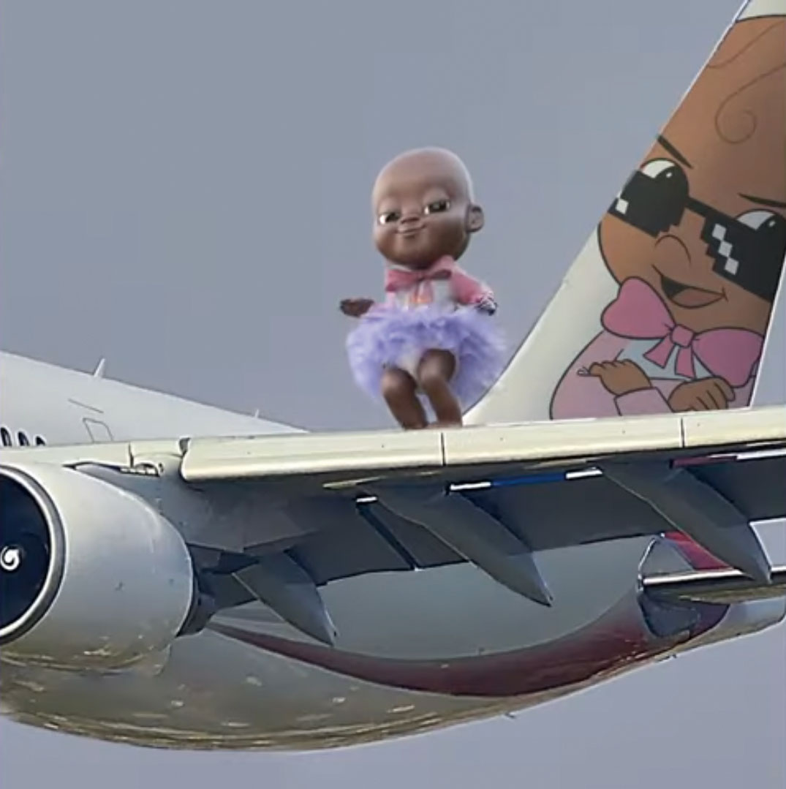
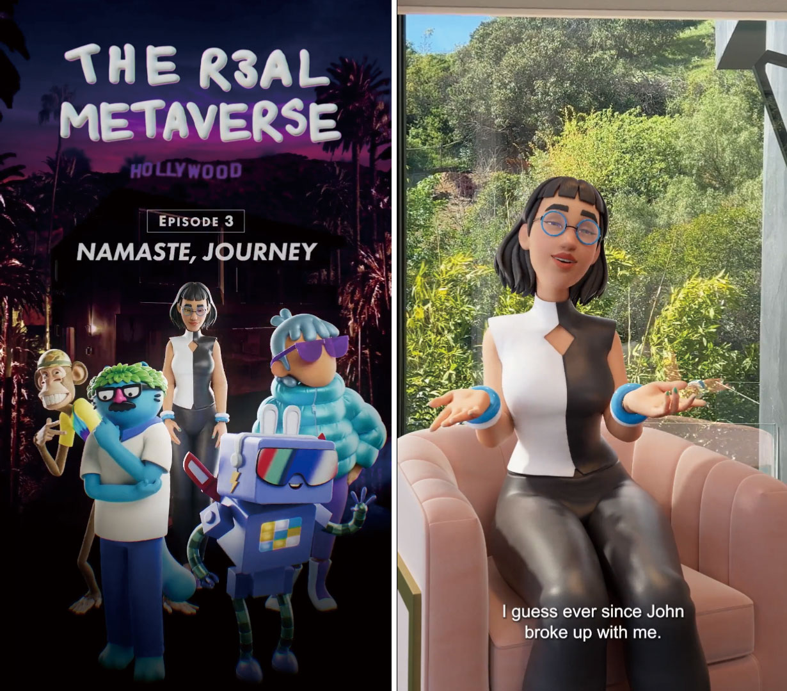
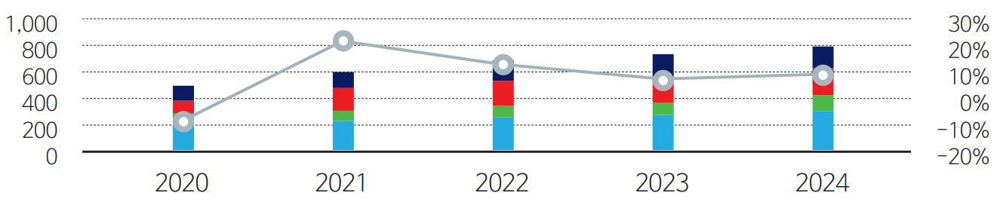

웹3.0

Web 3.0
완성도를 높여가는
웹 3.0 엔터테인먼트 비즈니스 모델:
‘커뮤니티’와 ‘새로운 경험’
한정훈
(JTBC 보도국 기자)
-
블록체인, NFT, 메타버스 등으로 요약되는 웹 3.0은 미디어 기업에서도 새로운 경제를 만들어내는 트렌드로 자리 잡고 있다. 웹 1.0은 네트워크가 중심이었고 웹 2.0은 플랫폼과 인터넷의 세상이었다. 그러나 웹 3.0은 블록체인을 기반으로 한 탈 분권화 속 새로운 디지털 경제 구축, 참여로 인한 ‘소비자와 생산자’의 직접 연결이 핵심이다. 중간 매개체가 사라지는 대신 ‘소비자와 생산자’가 직접 만나서면서 새로운 부가가치가 창출된다. 미디어 업계도 마찬가지다. 수용자들이 콘텐츠 생산에 참여하고 새로운 디지털 재화가 소비되면 크리에이터(Creator)에게 또 다른 기회가 주어진다. 특히, 현실과 맞닿아 있는 가상 공간인 메타버스는 웹 3.0의 종합적으로 구현된 ‘가상 복합체’가 되고 있다.
-
1들어가며“우리는 배팅 훈련 중이며 본게임은 아직 시작되지 않았다.(We’re in batting practice. The game hasn’t started yet)”
폭스(Fox)의 NFT 및 웹 3.0(Web 3.0) 자회사인 블록체인 크리에이티브 랩스(Blockchain Creative Labs) 대표 스콧 그린버그(Scott Greenberg)가 버라이어티(Variety)와의 인터뷰에서 한 말이다. 그는 웹 3.0 엔터테인먼트 시장에 대해 “아직 1회도 시작되지 않았다”며 “향후 무궁무진한 성장이 도래할 것”이라고 강조했다.
폭스는 4대 지상파 방송 중 유일하게 스트리밍 서비스 플랫폼을 가지지 않은 미국 방송사다. 스트리밍 시대에 불안할 만도 하지만, 폭스는 또 다른 영역에 미래를 걸고 있다. 폭스는 메이저 방송사 중 유일하게 조직 내 웹 3.0과 NFT 사업부(Division)를 런칭한 곳이기도 하다.
2021년 글로벌 팬데믹 이후 NFT, 메타버스(Metaverse), 블록체인(Blockchain), 암호화폐(Crypto-Currencies) 등 웹 3.0 경제가 확산된 가운데 폭스는 이 시장에 깊숙이 뛰어들었다. 물론 웹 3.0에 ‘자신들의 미래가 있다’고 생각하는 미디어는 폭스만이 아니다. 할리우드 스튜디오, 엔터테인먼트 테크놀로지 스타트업, 디지털 휴먼 기업 등은 새로운 시대를 대비하고 있다. 웹 3.0 콘텐츠 모델과 가장 앞서 있는 대표 기업들을 소개한다. -
2완성되는 웹 3.0 기반 콘텐츠 모델탈중심화, 탈분권화, 소비자 참여로 대표되는 웹 3.0 시대는 할리우드와 엔터테인먼트 산업도 바꾸고 있다. 미국 LA기반 벤처 캐피털 투자회사 세븐 세븐 식스(Seven Seven Six)의 공동 설립자인 케이틀린 할로웨이(Katelin Holloway)는 악시오스(AXIOS)와의 인터뷰에서 “웹3.0이 결국 할리우드와 엔터테인먼트 산업의 운영 방식을 바꿀 것”이라고 말했다. 세븐 세븐 식스는 전직 픽사(Pixar) 직원이었던 할로웨이가 이끌고 있으며 주로 웹 3.0에서 작동되는 콘텐츠 기업에 투자하는 대표적인 펀드다.
팬데믹 이후 엔터테인먼트 업계가 웹 3.0에 뛰어든 이유는 물론 ‘돈’ 때문이다. 글로벌 엔터테인먼트 기획사 WME의 파트너이자 디지털 전략 책임자 크리스 캐커민(Chris Jacquemin)은 버라이어티와의 인터뷰에서 “팬데믹이 한창일 때 우리는 웹 3.0과 NFT에 관심을 갖기 시작했다”며, “2020년 말 NFT 시장 규모는 3억 달러였는데 1년 뒤에는 시장이 410억 달러로 성장했다”고 설명했다.
그러나 웹 3.0은 미디어 기업들에게 수익 이상의 의미를 준다. 새로운 경제 질서를 규정할 수도 있기 때문이다. 웹 1.0과 2.0시대가 플랫폼 기업들의 시대였다면, 웹 3.0은 개인이 중심(User-Centric)이 중심이 되는 사회다. 웹 3.0에는 이론적으로 페이스북(Facebook), 아마존(Amazon), 구글(Google), 트위터(Twitter) 등 이른바 빅테크가 아닌 개인이 ‘플랫폼 주도권’을 가지게 된다.
웹 1.0시대는 미국 클린턴 정부 시절, 컴퓨서브(CompuServe)와 AOL계정을 통한 이메일을 주고받는 시대였고, 웹 2.0은 인터넷으로 불리는 월드 와이드 웹(World Wide Web)와 오디오, 비디오 스트리밍의 시대였다. 또 웹 2.0은 소셜 미디어 서비스가 플랫폼 세상을 장악했다.표 1웹 1.0~웹 3.0차이 출처: 블록체인, 코인텔레그래프하지만 웹 3.0경우 아이디어와 기술, 엔터테인먼트와 기술, 미디어와 기술 등의 중간 지점에서 경제가 태동한다. 웹 2.0 시대 플랫폼에 내에서 갇혀 있던 기술과 문화, 콘텐츠는 웹 3.0시대 블록체인과 같은 탈중심화 기술(decentralized protocols)을 만나면서 모든 사람들이 향유하고 생산하게 된다.
출처: 블록체인, 코인텔레그래프하지만 웹 3.0경우 아이디어와 기술, 엔터테인먼트와 기술, 미디어와 기술 등의 중간 지점에서 경제가 태동한다. 웹 2.0 시대 플랫폼에 내에서 갇혀 있던 기술과 문화, 콘텐츠는 웹 3.0시대 블록체인과 같은 탈중심화 기술(decentralized protocols)을 만나면서 모든 사람들이 향유하고 생산하게 된다.
특히, 크리에이티브 커뮤니티의 경우 웹 3.0테크에 의해 가능해진 이들 능력들은 아티스트들이 자신들의 작품에 대한 대가와 후원들을 팬들로부터 직접적으로 받을 수 있게 한다. 이론적으로 생산과 유통의 중간 계층(middle layers of production and distribution)이 사라지게 되는 것이다.
블록체인 기술이 만드는 복제 불가능한 디지털 장부(The Ledgers)에서는 디지털 콘텐츠 제작자와 소유자가 누구인지 확인할 수 있다. 때문에 웹 3.0 체제에서 예술가들은 ‘자신들의 디지털 작품이 유통되는 과정’에서도 수익을 올릴 수 있다. 이른바 디지털 거래(Digital String)의 새로운 전형을 만드는 것이다.
웹 3.0 기술의 적용과 보급은 미국 할리우드에서도 적극적으로 전개되고 있다. 다음 세대 소비자들이 웹 3.0과 메타버스와 연계된 새로운 엔터테인먼트 자산을 원하고 있기 때문이다. 이들이 만드는 새로운 경제도 Z세대의 새로운 관심사다.
영화 캐릭터, 소집품, 디지털 사진 등은 이제 NFT 기반으로 만들어져 판매되는 것이 일반화됐다. NFT는 블록체인 기술이 적용돼 ‘디지털 자산이지만 유일성이 인정’된다. NFT소유자들은 연예인 팬클럽 회원과 같은 속성을 지니고 있다.
자신이 좋아하는 (디지털) 아티스트들의 NFT를 수집하고 거래한다. 희귀본 디지털 NFT는 가치가 급상승한다. 콘텐츠 생산과 유통 주도권 상실을 우려한 할리우드 스튜디오들은 이제 이 시장에 직접 뛰어들고 있다. 디지털 콘텐츠 제작을 넘어 디지털 휴먼, 아바타 등을 만들어 그들만의 메타버스에 유통시키고 있다.
웹 3.0 시대의 강점은 ‘커뮤니티가 만드는 집단적 힘(The collective power of the community)이다. 트위치(Twitch)나 디스코드(Discord) 등 전문 소셜미디어 플랫폼에서 온라인 담론을 통해 만들어진 새로운 관계는 웹 3.0시대를 상징한다. 디지털 휴먼 제작 업체 인비지블 유니버스(Invisible Universe) CEO 트리샤 비기오(Tricia Biggio)는 언론 인터뷰에서 “웹 3.0시대에는 완벽하게 새로운 방식으로 만들어지는 IP를 확인할 수 있다”고 강조했다. -
3웹 3.0 시대 픽사, 인비지블 유니버스인비지블 유니버스의 CEO는 웹3.0 기반 콘텐츠 캐릭터를 이전과 확실히 구분한다. 비지오(Vizio) CEO는 “웹 3.0에서는 개인들이 IP를 활용해 자신만의 콘텐츠를 만들었던 틱톡 시절보다 더 확장된 방식으로 창작 활동이 이뤄질 수 있다”며 “웹 3.0은 콘텐츠 제작에서 개인들이 협력하며, 자신들의 자산을 공유하고 소유권이 확장돼 무차원의 방식으로 소비될 수 있다”고 언론 인터뷰에서 언급했다. 결국 소유자와 활용자 모두가 크리에이티브 세상에서 만날 수 있다는 이야기다.그림 1블록체인 기반 스타트업 투자
출처: 버라이어티
웹3.0 중심의 콘텐츠 제작은 티켓 판매나 닐슨 시청률이 아니라 NFT 경매와 CPU의 기술적 처리 능력 상승에 의해 비약적으로 성장하고 있다. 결국 웹 3.0은 할리우드 스튜디오와 콘텐츠 사업자들에게는 스트리밍에 이은 새로운 ‘플랫폼’으로 인식되고 있다. 현재는 메타버스로 진화하고, 있지만 정확히 어떤 방식으로 펼쳐질 지는 아무도 모른다.
할리우드 시장 질서를 바꾸는 ‘웹3.0 콘텐츠 스타트업’ 들은 투자자들의 뜨거운 구애 대상이 되고 있다. 집중 투자 대상은 웹 3.0 기반 콘텐츠 모델(web3-based content model)을 구축하는 기업들이다. 이 중 대표적인 곳이 인비지블 유니버스다. 이 회사는 최근 세븐 세븐 식스가 이끈 투자 라운드 시리즈A에서 1,200만 달러(163억 원)를 끌어 모아 화제가 됐다.
인비지블 유니버스는 메타버스나 소셜 미디어에서 활동하는 아바타 등을 만드는 애니메이션 제작 스튜디오다. 할리우드에서 ‘소셜 미디어 시대의 픽사(Pixar of the internet)’라고 불린다. 주로 유명인이 팬들과 소셜 미디어 서비스 등 온라인에서 팬들과 교감할 수 있는 애니메이션 캐릭터를 만든다. 세븐세븐 식스 뿐만 아니라 배우 제니퍼 애니스톤(Jennifer Aniston), 윌 스미스(Will Smith)의 ‘드리머스 VC(Dreamers VC)’ 등도 투자했다.
그림 2카이 카이 캐릭터출처: Real Qai Qai(https://www.youtube.com/watch?v=cC6Orz_-Xvs)
인비지블 유니버스는 테니스 스타 세레나 윌리엄스(Serena Williams)의 딸 알렉시스 올림피아 오헤니언(Alexis Olympia Ohanian)의 인형 카이 카이(Qai Qai)의 디지털 캐릭터를 만든 것으로도 유명하다. 이 캐릭터는 특정 플랫폼이나 소셜 미디어에 구애받지 않고 유통된다. 카이 카이는 인스타그램, 페이스북, 유튜브 등에서 활동하며 아마존에서도 인형으로 살 수 있다. 인비지블 공동 창업주인 조나단 베레난(John Brennan)은 세레나 윌리엄스와 친구다. 이 인연을 계기로 그녀의 딸이 가진 인형을 디지털 캐릭터로 개발했다.
웹3.0 콘텐츠 ‘공동 창작’, ‘에고리스 스토리텔링’
인비지블 유니버스의 강점은 기술에만 있지 않다. 그들이 만드는 디지털 아바타는 웹 3.0 플랫폼에서 팬 참여에 기반하는 ‘에고리스(Egoless)’ 스토리도 가지고 있다.
팬들이 캐릭터의 성격을 채우고 교감을 통해 캐릭터가 형성되는 것이다. 이른바 탈중앙화, 탈분권화, 팬 중심의 웹 3.0 디지털 아바타인 셈이다.
세계적인 인플루언서 찰리&딕시 디아멜리오(Charli D’Amelio & Dixie D’Amelio) 자매의 디지털 캐릭터 ‘스퀴키와 로이(Squeaky and Roy)’는 틱톡 챌린지에서 다양한 유연성을 보여주고 있다. 사용자들은 인비지블 유니버스가 만든 챌린지 공간인 ‘3D침실’에 들어와 ‘스퀴키와 로이’의 색다른 도전을 감상하고 있다. 인비지블 유니버스는 스퀴키와 로이가 자신들의 방을 소개하는 룸투어 영상도 만들어 올렸다. 비지오 CEO는 닷LA인터뷰에서 “시청자는 우리가 새로운 스토리를 낼 수 있게 돕고 우리는 반응한다”고 강조했다.
이런 과정을 인비지블 유니버스는 공동 창작(process of co-creation)으로 보고 있다. 제대로 작동할 경우, 팬 충성도를 높이고 영화, 책, NFT 등과 같은 콘텐츠와 제품으로도 쉽게 확장이 가능하다. 현재 모든 캐릭터가 유명인과 협업해 만들어지지만, 비지오는 이를 플랫폼으로 확장하길 원하고 있다. 비지오는 언론 인터뷰에서 “우리의 IP가 다음 100년의 엔터테인먼트 프랜차이즈를 만들 수 있다고 본다”며 “이를 위해 시청자가 원하는 스토리텔링을 지속적으로 확인해 반영할 의무가 있다”고 강조했다.
인비지블 유니버스는 캐릭터를 넘어 콘텐츠 스토리텔링으로 나아가고 있다. 웹 3.0 아바타를 바탕으로 한 TV시리즈에 도전한 것이다. 2022년 8월 30일 인비지블 유니버스는 웹 시리즈 ‘R3알 메타버스(The R3al Metaverse)’를 공개했다. 이 시리즈는 ‘보어드 에이프(Bored Ape)’, ‘쿨 캣츠(Cool Cats)’, ‘월드 오브 위민(World of Women)’과 같은 인기 NFT의 애니메이션 버전이다. ‘더 리얼월드(The Real World)와 ‘빅 브라더(Big Brother)’와 같은 TV리얼리티 쇼 형식을 따와 캐릭터들이 실제 현실과 상호 교감하며 함께 사는 콘셉트다. 다시 말하면 NFT캐릭터들이 메타버스 공간에서 리얼리티쇼에 출연하는 형식이다.
트리카 비지오(Tricia Biggio) CEO는 악시오스와 인터뷰에서 “우리는 실제 LA 고급 맨션에서 촬영했다”며 “각 캐릭터는 실제 목소리 배우들이 와서 연기했다. 30회 모두 촬영한 상태”라고 설명했다. 비지오 CEO는 바이어컴(Viacom)과 MGM(Metro-GoldwynMayer’s Inc) 임원으로 리얼리티TV분야에서 일한 바 있으며 최근 웹 3.0분야에 들어왔다.
‘R3알 메타버스’는 영화에 비유하면 일종의 ‘NFT 어벤져스 무비’라고 볼 수 있다. NFT 시장에서 이미 유명한 대형 캐릭터들이 하나의 콘텐츠에 등장하기 때문이다. 비지오 CEO는 “우리는 처음에 농담으로 NFT아바타를 하나의 리얼리티쇼에 투입해 작품을 만들면 어떨까 하고 생각했다”며 “실제 해보니 상당히 좋은 생각이었다”고 말했다.
그림 3메타버스 드라마 ‘R3알 메타버스’출처: The Real Metaverse(https://twitter.com/r3almetaverse/status/1565368470547550208)
‘R3 메타버스’는 5명의 NFT 캐릭터들이 LA에 함께 모여 살면서 느끼는 감정과 생활을 묘사한다. 5명의 멤버(캐릭터)들은 유명한 NFT 컬렉션에서 따왔다. ‘보어드 에이프 요트 클럽(Bored Ape Yacht Club)’, ‘월드 오브 위민(World of Women)’, ‘두들스(Doodles)’, ‘쿨 캣츠(Cool Cats)’, ‘로보토스(Robotos)’ 등이다. 형식은 숏폼 코미디인데 1~2분 분량의 콘텐츠가 소셜 미디어 서비스를 통해 유통된다. 한 에피소드에서 캐릭터들은 그림을 응시하고 벽 장식이 실제와 다르다며 불평하기도 한다. 또 현실에서 애인과 헤어졌지만 메타버스에서 새로운 친구를 만났다고 기뻐하기도 한다.
NFT 리얼리티가 실제 리얼리티쇼와 다른 점 중 하나는 ‘NFT 컬렉션(상품)’이 특정 하나의 회사에 의해 온전히 운영되지 않는다는 데 있다. 각 프로젝트에는 수천 명의 NFT 소유자가 있으며, 이들은 종종 자신의 예술작품에 대한 각자 개별 상품화 권리를 가지고 있다. 이중 인비지블 유니버스는 3개의 NFT를 구매했고 ‘R3알 메타버스스토리에 맞는 2개 이상의 라이선스를 추가로 확보했다.
특히, 시청자의 참여를 높이기 위해 탈중심화가 핵심인 블록체인 기술을 활용했다. 인비지블 유니버스는 7,200개의 프로듀서 패스(Producer Pass) NFT를 판매할 예정이다. 프로듀서 패스 NFT 소유자들은 쇼의 제작 방향과 스토리 전개 등에 관여할 수 있다. 또 자신들의 쇼에 등장시킬 수도 있다.
이런 NFT 미디어 프로젝트는 다양한 방식으로 전개되고 있다. 커뮤니티 주도형 소설 프로젝트(community-driven novel project)로 불리는 ‘젠킨스(Jenkins the Valet)’에서부터 케빈 스미스(Kevin Smith)의 호러 영화를 함께 만드는 프로젝트까지 이어지고 있다. 물론 아직 이런 NFT미디어 프로젝트는 최고 단계에서 어떤 프로젝트가 성공할 지 알 수 없다. 또 팬들의 투입이 창작 활동에 도움이 될 지도 장담하기 어렵다.
비지오는 협업 프로젝트에 적절한 가드레일을 만들고 있다. 일종의 ‘창작의 가드레일(creative guardrails)’로 메인 캐릭터의 특징과 동기들을 통제한다. 비지오는 언론 인터뷰에서 “이런 가드레일 안에서 엄청난 협력이 이뤄진다.”며 “NFT 홀더들은 캐릭터들이 실제 리얼리티TV 출연자들이 하는 것처럼 ‘고백 영상(confessional interview, 카메라를 보고 말하는 영상)’을 만드는 것을 도울 수 있다”고 말했다.
케이틀린 할로웨이 세븐 세븐 식스 CEO는 미국 언론 인터뷰에서 “메타버스, 웹 3.0, 블록체인 등장으로 스토리텔링 방식과 우리가 스토리텔링을 소비하는 문화가 크게 변화하고 있다”며 “이런 관점에서 우리는 인비지블 유니버스를 픽사의 웹 3.0버전으로 보고 있다”고 언급했다. 픽사가 애니메이션의 개념을 바꿔놨듯, 인비지블이 웹 3.0에서 콘텐츠 비즈니스를 변화시킬 것이라는 이야기다.
-
4폭스가 나선 이유, “스트리밍 대신 웹 3.0”2021년 폭스는 미국 미디어 업계 최초로 블록체인과 웹 3.0 관련 기술 개발과 콘텐츠를 만드는 벤처 기업 ‘블록체인 크리에이티브 랩스(Blockchain Creative Labs)’를 런칭했다. 인수한 자회사 벤토박스(BentoBox) 엔터테인먼트 부문 내 사업부 형태다. 이 회사는 ‘밥의 강도(Bob’s Burgers)’라는 애니메이션으로 큰 인기를 끌었다. 현재 BCL의 CEO 스콧 그린버그(Scott Greenberg)는 벤토박스의 공동 창업자다. 출범 이후 NFT 기반 디지털 자산과 애니메이션 등을 잇달아 런칭해 유통하고 있다.
폭스가 2000년대 초반 ‘아메리칸 아이돌(American Idol)’로 미국인들에게 프로그램에 문자를 보내는 방식을 가르쳤듯, 폭스와 블록체인 크리에이티브 랩스는 엔터테인먼트의 세계에서 웹 3.0의 가치와 실행 가능성을 입증하는데 앞장서고 있다.
업계 최초 NFT기반 커뮤니티 애니메이션 <크라포폴리스(Krapopolis)>를 2022년 11월 27일 런칭한다고 밝히며 2022년 7월 샌디에이고 코믹콘(Comic-Con)에서 예고편을 공개했다. 그리스 신화를 배경으로 한 이 애니메이션은 인간과 신, 괴물이 서로를 죽이지 않고 세계 최초의 도시를 건설하려는 노력을 그린 가족 드라마다.
특히 이 애니메이션은 단순한 콘텐츠를 넘어, 각 캐릭터들이 모두 NFT로 만들어지면 향후 폭스 메타버스에서 유통될 수도 있다. 시리즈의 공식 시작은 2023년이며 폭스와 BCL의 웹 3.0 콘텐츠의 미래는 <크라포폴리스>의 성공 여부에 달려있다고 해도 과언이 아니다. 폭스는 이 애니메이션의 창작자를 댄 하몬(Dan Harmon)에 이어 커뮤니티(Community)라고 적시했다. 집단 지성이 콘텐츠를 만들어가는 웹 3.0특징을 그대로 보여준다.
웹 3.0에서의 폭스의 전략은 단순히 디지털 수집품(speculative digital collectibles)으로써 NFT를 만들어 수익을 올리는 것은 아니다. BCL의 장기 비전은 콘텐츠 유통과 소비자 참여를 위한 새로운 비즈니스 모델을 만드는 것이다. 그들이 스트리밍 서비스에 투자하지 않은 이유도 여기 있다. 중간 매개체인 스트리밍 서비스를 넘어 팬들이 문자 그대로 자신들이 좋아하는 TV프로그램의 일부를 소유할 수 있게 허용하는 것이 폭스의 목표다. 폭스 엔터테인먼트 부문 CEO 찰리 콜리어(Charlie Collier)는 “웹 3.0투자는 향후 폭스에 많은 배당을 안겨줄 것”이라고 강조했다.
폭스그룹 오너 창업주 루퍼트 머독(Rupert Murdoch)과 그의 아들 라클란 머독(Lachlan Murdoch) 역시 블록체인, 웹 3.0 미디어 비즈니스 투자에 적극적인 것으로 알려졌다. 콜리어는 인터뷰에서 “그들은 블록체인 비즈니스에 올인(All-in)했다”며 “머독 가문은 항상 새로운 비즈니스를 검토하고 성공적인 벤처에 투자하는 데 관심이 많다.”고 설명했다.
출범 이후 BCL은 웹 3.0 기반 콘텐츠를 제작하는 크리에이터들을 위한 ‘크리에이터 펀드’ 1억 달러를 조성하는 등 웹 3.0콘텐츠 시장을 적극적으로 개척하고 있다. 또 폭스는 NFT와 블록체인 관련 상품에 1억 달러를 투자할 계획이다. 2021년 8월 폭스 그룹은 블록체인 기술을 이용하고 프리미엄 콘텐츠의 수익화와 유통을 돕는 스타트업 엘류비오(Eluvio)에 소액을 지분 투자했다
BCL CEO 그린버그는 인터뷰에서 “애니메이션 회사로써 우리의 모든 자산은 이미 디지털화되어 있다”며 “BCL의 콘텐츠는 데이터베이스 기반으로 만들어졌고 NFT와 블록체인을 수용하는 것은 우리에게 자연스러운 진화”라고 설명했다.
폭스가 보는 ‘웹 3.0의 비즈니스 잠재력’은 NFT 등 디지털 수집품 시장을 뛰어넘는다. 블록체인은 디지털 자산(digital property)에 실물 재산권(real rights)을 부여할 수 있는 첫 번째 사례이기 때문이다. 웹 3.0 엔터테인먼트는 콘텐츠 소유자가 모든 단계 거래에서 수익을 창출할 수 있는 새로운 능력을 제공할 수 있다. 이에 그린버그는 “우리는 홈비디오를 새롭게 창조하고 있다”고 말했다.
이와 관련해 BCL은 FOX의 유명 예능 콘텐츠인 <마스크드 싱어(Masked Singer)>’와 관련한 NFT를 만들어 유통하고 있다. 또 화려한 가면의 NFT가 유통되는 마켓 플레이스인 ‘마스크버스(MaskVerse)’를 런칭, 지금까지 30여 만 명의 사람들이 디지털 지갑을 만들어 참여했다. 아울러 BCL은 프로 레슬링 리그 WWE와 협력해 폭스에서 <프라이데이 나이트 스맥다운(Friday Night SmackDown)>을 방송하고 프로레슬러 관련 디지털 수집품(digital collectibles)을 유통하기도 했다.
<크라포폴리스>의 초기 출시 컬렉션 중 하나인 ‘크랩 치킨(Krap Chickens)’은 지난 8월 11일 NFT마켓 플레이스 오픈씨에서 판매를 시작했는데 184달러에서 330달러(이더리움 암호화폐) 수준에서 거래되고 있다.
크라포폴리스 NFT 구매자에게는 콘텐츠 독점 시사회, 출연진과 제작진 간 온라인 미팅, NFT 출시 독점 공개 등의 특전도 있다. 특히, 콘텐츠 제작에 포함되는 요소에 대해 투표할 수 있는 권한(에피소드 엔딩송)도 주어진다. 일정 수준 이상 크레딧을 쌓은 NFT 보유자들에게는 시리즈의 추가 장면도 제공된다. 그린버그는 “충성팬의 경우 크라포폴리스에 자신들이 원하는 캐릭터를 출연시킬 수도 있다.”고 강조했다. 2022년 8월 현재 크라포폴리스 닷컴(Krapopolis.com)은 1만 420개의 치킨 NFT를 런칭했다. -
5웹 3.0 기반 스타트업, 메타버스의 핵심슬리 리(Sly Lee), 아이작 카스트로(Isaac Castro), 마우리시오 테란(Mauricio Teran) 등 스타트업 ‘이머지(Emerge)’를 창업한 세 명은 가상 세계와 현실 세계를 연결하는 데 7년을 투입했다.
현재 메타버스라는 말이 유행하기 전부터 ‘이머지’의 공동 창업주들은 사람들이 전자 스크린 뒤에 있는 다양한 디지털 콘텐츠를 직접 만질 수 있는 미래를 상상했다. 그들이 생각하는 디지털 공간에서는 친구들은 가상 현실(Virtual Reality, VR) 게임을 하는 동안 하이파이브도 할 수 있고, 예술가들은 맨손으로 디지털 점토를 만들어낼 수도 있다. 멀리 떨어져 있는 사랑하는 사람들과도 서로 껴안거나 어깨를 감쌀 수도 있다. 카스트로 공동 CEO는 “그동안 개발된 가상 현실 경험은 인간에게 매우 중요한 ‘접촉(The Sense of Touch)’이 없었다”고 말했다.
가상현실에서 촉각을 구현하겠다는 그들의 생각은 2022년 1월 더 구체화됐다. 이머지는 버추얼 현실에서 초음파를 이용, 맨손 촉감을 느끼게 하는 첫 번째 디바이스를 공개했다. 이머지는 이 기술을 통해 상당한 투자금도 유치했다. 투자자들부터 3,100만 달러를 모았고 펀딩 시스템 ‘킥스타터(Kickstarter)’를 통해 20만 달러를 추가로 모금하고 있다.
이머지는 현재 메타버스에서 새로운 기회를 찾고 있는 스타트업 중 하나다. 메타버스는 사용자들이 3D 가상 공간에서 일하고, 쇼핑하고, 친구들과 교감을 할 수 있는 초현실적 공간을 정의하는 공간이다. 새로운 공간을 정의한다는 측면에서 메타버스 역시 웹 3.0의 핵심일 수밖에 없다.
현실처럼 회사도 가고 쇼핑도 즐기며 친구와 가족을 만날 수 있는 3차원 가상 현실 메타버스는 웹 3.0에서 보다 구체화되고 있다. 메타버스 기술은 가상현실(Virtual Reality)과 증강현실(Augmented Reality)뿐만 아니라 NFT 등 디지털 상품을 만들과 판매하고 전송하는 플랫폼을 포함한다. 특히, 메타버스 구성 기술 기업은 미국 LA 지역에 대거 모여 있다. LA지역 기업들은 VR영화를 만드는 스튜디오에서부터 공상과학 영화에 홀로그램 비디오를 디자인하는 IT기업까지 다양하다.
메타버스 시장 전망은 밝다. 블룸버그에 따르면 글로벌 메타버스 시장은 2024년 8,000억 달러까지 상승할 것으로 예상된다.
메타버스와 웹 3.0은 궁합이 잘 맞을 수밖에 없다. 웹 3.0 기반에서 구현되는 메타버스는 새로운 공간을 창출한다. 또 NFT, 디지털 수집품 등 새로운 디지털 재화들을 거래되면서 ‘신개념’의 경제도 만든다.그림 4메타버스 시장 규모출처: 블룸버그
이런 측면에서 ‘현실과 가상 세계’를 이어주는 웹 3.0기업들을 주목할 필요가 있다. 2013년 미국 LA에 런칭한 콘텐츠 테크놀로지 회사 매그노퍼스(Magnopus)는 마틴 스콜세지(Martin Scorsese)의 영화 <후고(Hugo)>의 비주얼 이펙트 기술자였던 벤 그로스맨(Ben Grossmann)이 공동 창업했다.
매그노퍼스는 픽사의 <코코(Coco)>, 워너미디어(WarnnerMedia)의 <블레이드 러너(Blade Ruunner)>와 같은 애니메이션이나 SF 영화에 실제 사람들이 들어가 느낄 수 있는 VR 경험을 개발해왔다. 가상 현실과 실제 현실을 연결시키는 것이 이 회사의 목적이다. 2022년 영국 런던 소재 VR 회사를 인수하는 등 메타버스 속 확장을 거듭하고 있다.
그로스맨EO는 언론 인터뷰에서 “VR이 스토리텔링의 성격을 바꿀 수 있는 잠재력을 가지고 있다고 믿고 있다”며 “팬들은 자신이 좋아하는 영화에서 등장인물의 관점에서 이야기를 경험하고 줄거리를 바꿀 수도 있다”고 설명했다. 앞으로 VR세상에서 제작진은 감독이 아닌 가이드가 될 것이라는 것이 매그노퍼스의 입장이다.
역시 미국 LA에 본사를 두고 있는 메타스테이지(Metastage)는 스트리밍 서비스 훌루(Hulu)의 TV시리즈 <라이트 애스 어 패더(Light as a Feather(LAAF))>의 증강현실(AR)을 구축한 바 있다. 메타스테이지는 VR헤드셋을 쓴 팬들을 드라마 내로 초청하는 이벤트를 벌였다.
2018년 10명으로 시작된 회사는 배우와 아티스트를 홀로그램으로 만들어 가상 현실에 투입하고 공연도 벌인다. 가상 현실 속 드라마에서는 팬들과 배우들은 만날 수도 있다. 유명인들의 홀로그램을 만들기 위해 106대의 카메라로 모든 각도에서 사람들을 촬영하는 ‘볼륨 측정 비디오(volumetric video)’ 스튜디오를 활용한다. 이렇게 제작된 작품은 VR헤드셋이나 스마트폰을 통해 시청할 수 있다. 기술이 보다 발전한다면 이런 기기 없이도 가상 현실 접속이 가능할 수 있다고 회사는 설명했다.그림 5프로토 작품출처: Jnote
미국 LA에 본사를 두고 있는 프로토(Proto)가 만드는 가상 현실 기기는 공상 과학 영화 같다. 이 회사는 ‘포틀(PORTL)’이라고 불리는 7인치 높이의 홀로그램 부스를 판매한다. 이 부스는 사람들의 이미지를 3차원 홀로그램으로 만들어서 세계 각지의 원하는 공간에 보낼 수 있다. 뉴욕에서도 LA에 있는 아들 생일에 참석할 수 있다.
지난 2019년에 런칭한 이 회사가 만드는 3차원 부스는 개당 가격이 6만 5,000달러 정도다. 2만 5,000달러 정도의 대여 모델도 있다. 올해 2022년의 경우 사이즈를 줄이고 가격을 낮춘 2,500달러 보급형 버전도 고려 중이다.
프로토 CEO 데이비드 누스바움(David Nussbaum)은 “현재 홀로그램 부스를 100대 이상 팔았다”며 “투자도 늘어나 지금까지 1,500만 달러 이상을 모았다”고 설명했다. 또한 미국 텍사스 오스틴에서 끝난 SXSW컨퍼런스에서 혁신상을 수상했다. 누스바움 CEO는 “이 프로그램을 처음 시작했을 2019년에는 메타버스가 그렇게 확산되지 않았다”며 “메타버스가 확산됨에 따라 이 기기는 홀로그램 부스가 아닌 메타버스로 들어가는 창이 될 수 있다”고 설명했다. -
Reference
- https://www.youtube.com/watch?v=uYFhBfPee5A&t=28s
- https://dot.la/spire-epic-metaverse-movies-2656527827.html
- https://metastage.com/
- https://ir.superleague.com/news-events/press-releases/detail/137/super-league-gaming-reportsrecord-fourth-quarter-and-full
- https://www.bloomberg.com/professional/blog/metaverse-may-be-800-billion-market-next-techplatform/
- https://fortune.com/longform/virtual-reality-struggle-hope-vr/
- https://ir.superleague.com/news-events/press-releases/detail/135/super-league-forges-landmarkpartnerships-enabling
- https://variety.com/2022/digital/news/microsoft-to-buy-activision-blizzard-1235156048/
- https://twitter.com/FENTYCORP/status/1342605762141499395
- https://genies.com/
- https://dot.la/bob-iger-avatar-startup-genies-2656956514.html
- https://blog.genies.com/giving-you-ownership/index.html
- https://www.dnablock.com/
- https://dot.la/dnablock-web3-nft-avatar-2656820185.html
- https://www.theverge.com/2020/7/21/21333431/roblox-over-half-of-us-kids-playing-virtual-partiesfortnite
- https://dot.la/wave-virtual-concerts-2646166627.html
- https://dot.la/amazevr-virtual-reality-concerts-2656371637.html
- https://dot.la/adam-arrigo-wavexr-2655489649.html
- https://amazevr.com/
- https://www.magnopus.com/
- https://www.youtube.com/watch?v=688XEeK80GQ
- https://www.businesswire.com/news/home/20210223005442/en/NantStudios-Announces-Openingof-State-of-the-art-Virtual-Production-Campus-in-El-Segundo-California
- https://metastage.com/light-as-a-feather/
- https://www.axios.com/holoportation-beam-portl-hologram-technology-3c9c1fd6-345f-4b5c-bff0-bc8964d482e4.html
- https://www.portlhologram.com/
- https://www.businessinsider.com/video-game-makers-explain-why-main-metaverse-promise-isfalse-2022-1
- https://prettybigmonster.com/
- https://www.axios.com/pro/media-deals/2022/06/09/story-dao-blockchain-new-franchise-ip
- https://dot.la/invisible-universe-2655446647.html
- https://www.youtube.com/channel/UCtwX1Z2vi2q0PkkU8xOtzGA
- https://dot.la/bored-ape-go-holllywood-2657509705/particle-2
- https://www.theinformation.com/articles/why-silver-lake-and-elliott-are-the-wild-cards-in-thetwitter-takeover-battle?rc=uhfow3
- https://dot.la/genies-raise-2652855631.html
- https://dot.la/guide-to-the-metaverse-2657027165.html
- https://dot.la/genies-avatar-diy-collective-2657750841.html